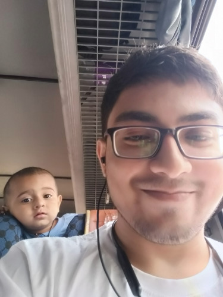
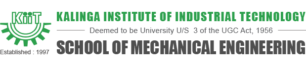
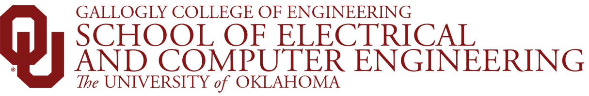

I am a Mechanical Engineering graduate student at The University of Oklahoma, with a B. Tech in Aerospace Engineering from KIIT. My background combines technical engineering skills with experience in organizing events, leading teams, and engaging in community service, demonstrating my ability to effectively manage and contribute to Engineering Student Life programs.
University of Oklahoma, Norman, OK | Aug 2023 - Present
Oklahoma University, Norman, OK | Aug 2023 - Present
KIIT University, India | Jan 2021 – June 2022
Master of Science (M.S.) - Mechanical Engineering
University of Oklahoma, Norman, OK | Aug 2023 - Aug 2025 (Expected) | GPA: 4.0
Bachelor of Technology (B.Tech.) - Aerospace Engineering
Kalinga Institute of Industrial Technology, Bhubaneshwar, India | Jul 2018 - Jun 2022 | GPA: 3.5
Expert in: MS Office Suite, Adobe Creative Cloud, Organizational (Event Planning), Communication and Public Speaking, Teamwork (cross-functional), Project Management (Coordination), C++, Python, R, Web Development, DSA, Customer Service, PTC Creo, SolidWorks, NI LabView, GNU Octave, Matlab
Intermediate in: Ansys Fluent, FEM, Fusion 360, Supply Chain Planning and Operations
Member | American Institute of Aeronautics and Astronautics | Mar 2024 - Present
Member | ASME | Aug 2023 - Present
Volunteer | PETA India | Sep 2021 - Oct 2022
Social Media Manager | Sarvani NGO (India) | Aug 2021 - Jul 2022
Member | National Service Scheme (India) | Aug 2019 - Aug 2020
Member (Recruiter and NATO Committee) | KIIT Model United Nation | Oct 2018 - Mar 2021
Member | KIIT Aerospace Society | Jul 2018 - May 2022

